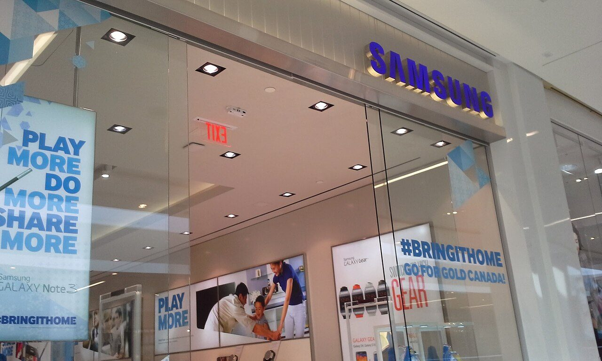
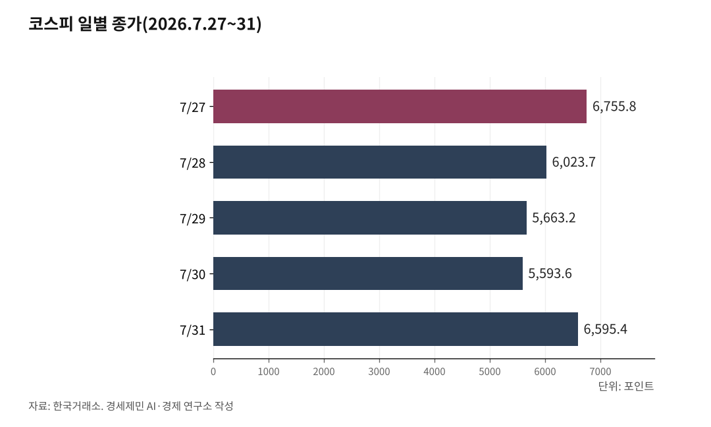

[주식공부] 사상 최대 실적 낸 이틀은 내렸고, 헤지펀드 청산 뒤 17.91% 올랐다
AI경세제민=김갑봉 기자 | 코스피가 사흘 만에 6755.75에서 5593.56으로 밀렸다가 하루에 1001.89포인트 올라 6595.45로 끝났다

SK하이닉스 영업이익 60조5426억원, 삼성전자 89조4924억원을 내놓은 이틀 동안 두 회사 주가는 내렸다
개인은 폭락 첫날 4조3179억원을 받았다가 반등 하루에 8조2543억원을 던졌다, 8월은 물가와 고용이 가른다
(데이터 기준시점: 2026년 7월 31일 종가 / 마지막 데이터 학습 완료일 2026년 7월 21일, 이후 웹검색 검증)
코스피가 지난 한 주 동안 95.17포인트(1.42%) 내린 6595.45로 마쳤다. 주간 등락률만 보면 조용한 한 주다.
경로는 험했다. 28일과 29일에는 유가증권시장과 코스닥시장에서 사상 처음 이틀 연속 서킷브레이커가 발동됐다. 서킷브레이커는 지수가 급락하면 20분간 매매를 전면 중단하는 장치다.
순서가 핵심이다. SK하이닉스가 분기 사상 최대 실적을 내놓은 29일 주가는 9.61% 내렸고, 삼성전자가 영업이익 89조4924억원을 발표한 30일에도 지수는 1.23% 빠졌다. 지수를 되돌린 것은 실적이 아니라 미국 헤지펀드의 청산과 빅테크 실적이었다.
미국은 한 주에 1% 올랐고, 한국은 17% 빠졌다가 18% 올랐다
날짜별로 보자. 27일 0.97% 오른 6755.75, 28일 10.84% 빠진 6023.66, 29일 5.98% 빠진 5663.24, 30일 1.23% 빠진 5593.56이었다. 사흘 만에 17.20% 밀렸고, 29일 장중에는 5262.77까지 떨어져 낙폭이 12.63%에 이르렀다.
31일이 모두 되돌렸다. 코스피는 1001.89포인트(17.91%) 올라 상승률과 상승폭 모두 역대 1위를 기록했다. 직전 상승률 기록은 2008년 10월 30일의 11.95%였다. 코스닥은 주간 3.80% 내린 719.76으로 마쳤다.
같은 주 미국은 달랐다. 다우존스산업평균지수와 스탠더드앤드푸어스(S&P)500지수는 주간 약 1%, 나스닥종합지수는 약 1.6% 올랐다. 31일 나스닥 종가는 2만5373.85였다. 같은 날 상하이종합지수는 3832.26, 홍콩 항셍지수는 2만5884.43으로 마쳤다.
7월 성적표도 확정됐다. 코스피는 한 달 22.19% 내려 세계 주요 지수 가운데 낙폭 1위였고, 시가총액 약 1484조원이 사라졌다. 31일을 뺀 1~30일 하락률 34.01%는 1997년 10월 외환위기(-27.25%)보다 컸다.

사상 최대 실적은 주가를 못 올렸고, 남의 빚 정리는 올렸다
SK하이닉스는 29일 2분기 영업이익 60조5426억원을, 삼성전자는 30일 89조4924억원을 발표했다. 둘 다 분기 사상 최대로, 영업이익이 전년보다 각각 557.2%와 1813.8% 늘었다. 영업이익률은 76%와 52.2%다.
주가는 거꾸로 갔다. 발표 당일 SK하이닉스는 9.61% 내린 140만1000원에 마쳤고, 장중에는 124만6000원까지 밀려 낙폭이 19.61%에 이르렀다. 삼성전자는 이튿날 0.72% 내린 20만7000원으로 마쳤다.
값을 움직인 것은 따로 있었다. 운용자산 200억달러(약 28조5000억원)를 웃돌던 미국 헤지펀드 시추에이셔널 어웨어니스가 마진콜에 몰려 차입으로 사들인 주식을 시타델에 넘겼다. 오픈AI 출신 레오폴드 아셴브레너가 세운 이 펀드는 4배 레버리지로 인공지능·반도체 주식을 쌓아 왔다. 이 소식과 마이크로소프트·아마존의 호실적이 겹친 31일, 코스피가 17.91% 올랐다.
마진콜(margin call·추가 증거금 요구)은 빌린 돈으로 산 주식값이 떨어져 담보가 모자랄 때 돈을 더 넣으라는 통보다. 못 넣으면 빌려준 쪽이 대신 판다. 그 강제 매도가 값을 더 떨어뜨리고, 떨어진 값이 다음 마진콜을 부른다. 이 사슬을 끊는 과정이 디레버리징(deleveraging·부채 축소)이고, 4배 레버리지는 주가가 25%만 빠져도 원금이 사라진다.
첫날은 개인이 받았고, 둘째 날은 기관이 받았다
한국거래소 집계로 28일 유가증권시장에서 개인은 4조3179억원, 기관은 6386억원을 순매수했다. 외국인은 4조9841억원을 팔았다. 그날 삼성전자는 13.39%, SK하이닉스는 14.65% 내렸다.
29일에는 손이 바뀌었다. 개인과 외국인이 함께 팔았고, 기관이 3조원대를 받아냈다. 개인의 순매도 규모는 집계마다 1조원대와 2조원대로 갈린다.
31일은 정반대였다. 개인은 8조2543억원을 순매도해 역대 최대였고, 외국인은 7조2196억원을 순매수해 역시 역대 최대였다. 외국인 순매수 가운데 3조6086억원이 SK하이닉스, 2조1168억원이 삼성전자였다.
주간으로 묶으면 기관이 5조4503억원을 순매수했고 개인은 5조3909억원을 순매도했다. 개인이 받아낸 4조3179억원과 개인이 던진 8조2543억원은 같은 주의 숫자다.
규제도 같은 날 손을 갈랐다. 금융당국은 31일부터 단일종목 레버리지 상품을 살 때 현금 3000만원을 기본예탁금으로 두게 했다. 그날 관련 16개 종목 거래대금은 3조원대로 전날보다 75% 넘게 줄었다. 변동성을 키운 상품이 현금 3000만원을 든 사람만 살 수 있는 상품으로 바뀌었다.
거시 다섯 잣대가 둘로 갈라섰다
금리는 멈췄다. 미 연방준비제도는 29일 연방공개시장위원회에서 기준금리를 3.50~3.75%로 동결했다. 표결은 9대 3이었고, 반대한 세 명은 모두 0.25%포인트 인상을 주장했다. 세 명이 같은 방향으로 반대한 것은 2016년 9월 이후 처음이다.
채권금리는 올랐다. 미국 10년물 국채금리는 31일 4.75%로 한 주 전 4.69%보다 높다. 한국은행 기준금리는 7월 16일 올린 2.75%다.
유가와 환율은 내렸다. 브렌트유는 31일 배럴당 90.12달러(약 12만8000원), 서부텍사스산 원유는 84.67달러(약 12만1000원)에 마쳤다. 한 주 전 브렌트유 96.70달러보다 6.8% 낮다. 원달러 환율은 1424.0원으로 한 주 전 1466.6원보다 42.6원 내렸다.
물가는 그대로였다. 미 상무부 경제분석국이 30일 발표한 6월 개인소비지출(PCE) 물가지수는 전년 대비 3.7%, 식품과 에너지를 뺀 근원지수는 3.3% 올랐다. 한국 6월 소비자물가는 3.2%였다. 지난달 다섯 잣대가 한 방향을 가리켰다면, 이번엔 유가와 환율만 압력을 덜었다.
8월 첫 주는 물가와 고용이 가른다
국가데이터처는 4일 7월 소비자물가동향을 발표한다. 6월 3.2%가 3% 아래로 내려오는지가 8월 27일 금융통화위원회의 판단을 가른다. 같은 4일 미국 현지 장 마감 뒤 AMD가, 5일 샌디스크가 실적을 내놓는다. 7일에는 미국 7월 고용보고서가 나온다.
증권가가 내놓은 8월 좌표는 이렇다. 김용구 유안타증권 연구원은 8월 코스피 밴드로 5150~6350을 제시하며 5150선을 최악의 마지노선으로 뒀다. 신한투자증권은 6500~6600을 적정가치 재진입 선으로, 7200선을 첫 저항선으로 봤다.
방향을 바꿀 변수는 둘이다. 미국 고용이 둔화하면 금리 인상 걱정이 줄고, 그만큼 지수에 힘이 실린다. 반대로 유가가 다시 오르면 물가와 금리가 함께 되돌아온다. 31일에도 이란혁명수비대가 호르무즈 해협에서 유조선 두 척을 공격했다고 밝히자 국제유가가 1% 넘게 올랐다.
지난주 두 회사가 발표한 분기 영업이익은 합쳐 150조350억원이다. 그 숫자가 나온 이틀 동안 두 회사 주가는 내렸고, 남의 빚이 정리된 31일 SK하이닉스는 29.95% 올라 상한가를, 삼성전자는 26.81% 올라 26만2500원을 기록했다. 실적을 읽는 일과 남의 레버리지를 읽는 일은 지난주에 다른 결과로 이어졌다.
※ 이 기사는 인공지능 프로그램 클로드 오푸스 4.8을 활용해 작성했다.
참고문헌
· 한국거래소, 유가증권·코스닥시장 지수 및 투자자별 매매동향(2026.7.27~7.31)
· 삼성전자, "삼성전자, 2026년 2분기 실적 발표", 삼성전자 뉴스룸, 2026.7.30., https://news.samsung.com/kr/%EC%82%BC%EC%84%B1%EC%A0%84%EC%9E%90-2026%EB%85%84-2%EB%B6%84%EA%B8%B0-%EC%8B%A4%EC%A0%81-%EB%B0%9C%ED%91%9C
· SK하이닉스, "SK하이닉스, 2026년 2분기 경영실적 발표", SK하이닉스 뉴스룸, 2026.7.29., https://news.skhynix.co.kr/q2-2026-business-results/
· 금융위원회, "단일종목 레버리지 상품(ETF·ETN) 기본예탁금 강화 조기시행 방안 안내", 2026.7.24. (URL 미확인)
· 한국은행, "2026년 금융통화위원회 정기회의 개최 및 의사록 공개 예정일정", https://www.bok.or.kr/portal/bbs/B0000502/view.do?menuNo=201265&nttId=10094300
· 신주희, "코스피, 7월만 22% 급락해 주요국 중 하락률 1위… 8월 악재 딛고 반등?", 한국일보, 2026.8.2., https://www.hankookilbo.com/news/article/A2026080211080002205
· 배한님, "악몽의 7월 끝, 8월은 웃을까…팔란티어·샌디스크 실적까지 확인해야", 머니투데이, 2026.7.31., https://www.mt.co.kr/stock/2026/07/31/2026073116493843008
· 김미희, "코스피 변동성 경고등…AI 실적·美 고용지표가 분수령 [주간증시전망]", 파이낸셜뉴스, 2026.8.2., https://www.fnnews.com/news/202608021130294360
· "[스팟]코스닥 42.06포인트(5.32%) 내린 748.22 마감", 머니투데이, 2026.7.24., https://www.mt.co.kr/stock/2026/07/24/2026072415283625497
· "[마감시황] 코스피 6690.62 마감…외국인 4조1914억 순매도", 자본시장뉴스, 2026.7.24., https://www.jabon.co.kr/news/articleView.html?idxno=5277
· "[스팟] 코스피 65.13포인트(0.97%) 오른 6755.75 마감", 머니투데이, 2026.7.27., https://www.mt.co.kr/stock/2026/07/27/2026072715265826190
· 김현정, "코스피 장중 6000선 붕괴…외국인 4조 '패닉셀' [fn마감시황]", 파이낸셜뉴스, 2026.7.28., https://www.fnnews.com/news/202607281538171499
· "[스팟]코스피 732.09포인트(10.84%) 내린 6023.66 마감", 머니투데이, 2026.7.28., https://www.mt.co.kr/stock/2026/07/28/2026072815271496219
· "코스피, 5.98% 하락한 5663.24 마감…코스닥 6.12%↓(2보)", 뉴스1, 2026.7.29., https://www.news1.kr/finance/market-exr/6242936
· "[마감시황] 이틀 연속 폭락에 코스피 5663.24…코스닥도 6% 하락", 뉴스핌, 2026.7.29., https://www.newspim.com/news/view/20260729000988
· "'실적발표' 하이닉스, 9.6% 급락…장중 20% 가까이 폭락(종합2보)", 연합뉴스, 2026.7.29., https://v.daum.net/v/20260729163139176
· "Treasury Yields Snapshot: July 31, 2026", Advisor Perspectives, 2026.7.31., https://www.advisorperspectives.com/dshort/updates/2026/07/31/treasury-yields-snapshot-july-31-2026
· 이민혁, "[환율 전망] 기름 묻은 반도체, 원화까지 합선되나", KB국민은행 'KB의 생각', 2026.7.24., https://kbthink.com/investment/fx/daily/260724.html
· "Stock market today: Dow, S&P 500, Nasdaq rise to cap volatile July as Big Tech AI spending ramps up", Yahoo Finance, 2026.7.31., https://finance.yahoo.com/markets/live/stock-market-today-friday-july-31-dow-sp-500-nasdaq-081227738.html
· "Asian Stocks - 31/07/26", Armenpress, 2026.7.31., https://armenpress.am/en/article/1256897
사진 출처
· [대표사진] Rowanswiki, "Samsung Experience Store West Edmonton Mall 2014.jpg", 위키미디어 공용, CC0, https://commons.wikimedia.org/wiki/File:Samsung_Experience_Store_West_Edmonton_Mall_2014.jpg
※ 이 기사는 인공지능을 활용해 작성했습니다.
관련기사
- 코스피 7월에 21.07% 빠졌다, 나스닥은 4.72% 빠졌다
- [주식공부] 코스피가 5.80% 오를 때 코스닥은 20.13% 올랐다
- [주식공부] 코스피 하루 만에 4.46% 빠지고 3.56% 반등…이틀 사이 사이드카가 방향을 뒤집었다
- [주식공부] 코스피 18.45% 하락, 반등을 받친 건 자사주
저작권자 © AI경세제민 무단전재 및 재배포, AI학습 및 활용 금지